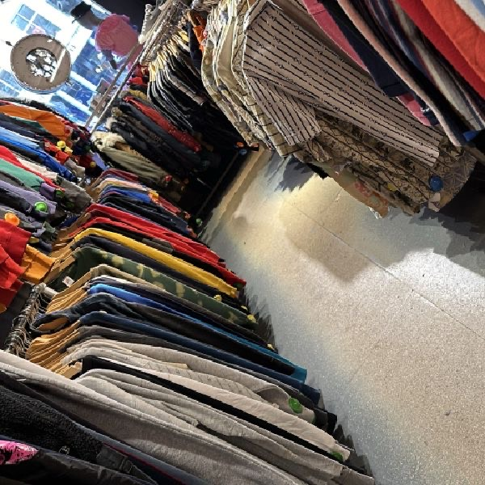
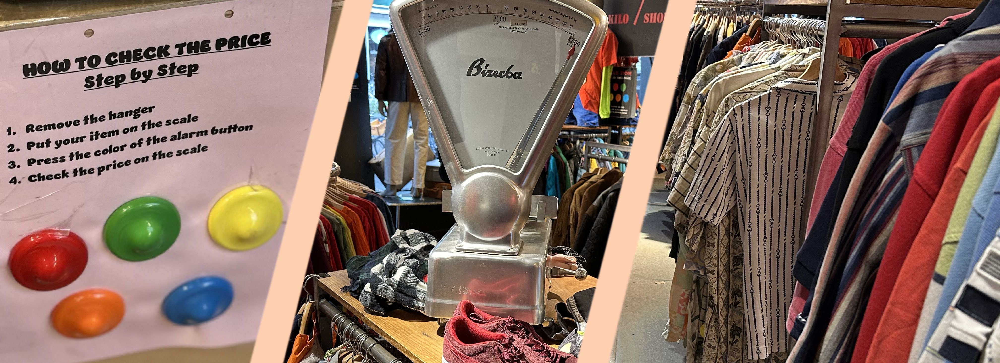

Hoe Het Werkt
Op deze pagina ga ik uitleggen hoe de Kilo Stores werken en hoe je in de winkels moet shoppen. Hier zal ik geen van de winkels in gebruiken en zal ik meer over het geheel praten. Laten we maar even beginnen met wat voor kleding je kan vinden.
De Kleding
Alles wat in de Kilo Stores te vinden is is tweedehands. Dit is natuurlijk heel groen. Je kan hier van alles en nog wat vinden. Van funky jassen en broeken van de 90's naar voetbalshirts van het vorige wk. Je kan hier echt bijna alles waar je maar aan kan denken vinden. De shops zijn dan ook vaak heel groot. Meestal hebben ze zelfs meerdere verdiepingen, zoveel kleding hebben ze.
Het Kilo Gedeelte
Er zijn een aantal regels in de Kilo Store. Regel 1: je betaalt voor het gewicht van je aankoop. Regel 2: de prijs verschilt per soort kleding. Dit is omdat er in aparte kleding veel mensen geld kunnen verdienen en de Kilo Store dit wilt voorkomen. Bijvoorbeeld sportartikelen kosten meer omdat de vraag daarvoor hoger is en er minder artikelen zijn. Verkleedspullen daarentegen zijn goedkoper omdat je er enorm veel kan vinden in de Kilo Stores. Persoonlijk vind ik dit een heel goed idee, ook al heb ik er zelf wel wat minder aan. Je kan zien in welke catogorie de kleding valt aan de gekleurde pin die op het kledingstuk zit.
